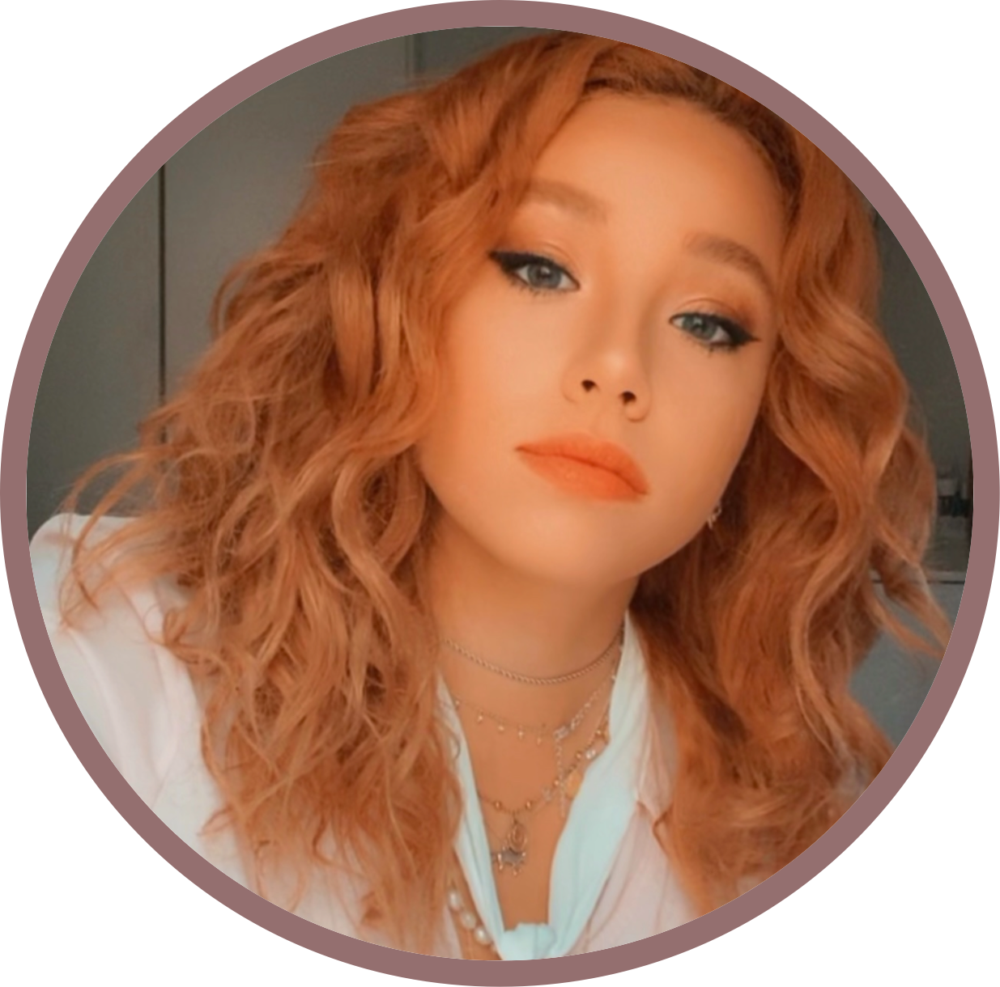

|  |
Claudia Pia Muraro VolpeCommited, creative and reliable. Ambitious, eager to keep growing and evolving in my profession. Constantly working on developing new skills and abilities. Contact Me |
Bachelor's degree programme in Chinese Language
September 2021 - present
- Lectures entirely taught in Chinese language.
Bachelor's Degree in Language and Civilisation of Asia and Mediterranean Africa
September 2019 - October 2022
- Main fields of studies : Chinese and Japanese languages and cultures.
- Artistic Management Minor degree in 2020.
High school diploma in foreign languages
September 2014 - July 2019
- Final mark: 100/100
- Exchange program to Hagen, Germany.
- General law and economics knowledge.
- “Alessio Solinas" International Award by Movimento Per La Vita， XXXII edition (2019)， 1st prize. Took part in the simulation of the European Parliament in Strasbourg, France.
- "ScienzAfirenze" Prize, XV edition (2018), 3rd prize.
September 2019 - present
Junior Enterprise Ca' Foscari
March 2020 - June 2022
- Worked with a team to build paid campaigns for social media.
- Worked with a team to design organic campaigns to increase client website traffic and sales.
- Scheduled and audited social media posts weekly.
- Wrote blog content.
- Analyzed and reported marketing data, including trends, web traffic patterns and engagement.
Young apprenticeship programmes experiences
June - July 2018 / June - July 2019
- Translated the law firm's website in English, court documents and judgements, legal correspondence.
- Worked as interpreter during international calls and meetings with foreign clients.
- Worked on formulating hypothesis to solve legal cases.
- Cooperated with the Senior Partner and Lawyers, barristers, chartered accountants and office workers in the personal or collaborative activity with the partners in the firm.
| Microsoft (Word, Excel, PowerPoint, Outlook) | ⭐⭐⭐⭐⭐ |
| Social medial skills (Facebook, Instagram, Twitter, YouTube, LinkedIn, WeChat) | ⭐⭐⭐⭐⭐ |
| Canva | ⭐⭐⭐⭐⭐ |
| Wordpress | ⭐⭐⭐⭐ |
| HTML and CSS knowledge | ⭐⭐⭐ |
| Italian | Native | |
| English | Advanced | C1 |
| Chinese | Upper intermediate | B2 |
| French | Upper intermediate | B2 |
| German | Intermediate | B1 |
| Spanish | Elementary | A2 |
| Japanese | Beginner | A1 |
| Latin | Beginner | A1 |
Communicative language competences in authentic social and school environments.
Creative writing.
Creativity in advertising campaigns.
Proficient in Marketing, Communications, and Media.